65.0%
Put Phone 60 · Multi-Finger 70
A Self-Evolving General World Model for Dexterous Manipulation
一套共享权重的视频-动作模型，只靠切换哪些 token 加噪、哪些 loss 打开，就能分别当 策略（出动作块）、模拟器（预测这个动作的视觉后果）和 评估器（给后果打进度分）。三者串起来，推理时用来挑动作，训练时用来改策略。
数据侧，主干先在约 13 万小时的人类第一视角视频上预训练（先单目，再双目加手部动作），再用 100 多小时机器人与人机对齐数据做域适配。另有一个轻量触觉专家，在灵巧手上用最新的力信号修正即将执行的动作。
策略 → 模拟器 → 评估器 → 回到策略（规划时挑分最高的，MBRL 时拿分数更新策略）
同一套目标任务 SFT，只换初始化：从 Wan 视频模型出发 0%，从人类预训练权重出发 51%，再加机器人域中训练 84%（5 个任务宏平均，每任务 20 次）。π0.5 同协议下也是 0%。
2 个任务平均：基线 65.0%，只加规划 67.5%，只加 MBRL 72.5%，两者都加 75.0%。
全局自回归（保留全部历史）胜过混合记忆：仿真 78% 对 52%，真机 57.5% 对 25.0%。
同一中训练权重出发，去掉触觉 60.0%，加上触觉 72.5%（抽纸杯、撕纸 2 个任务）。
论文的出发点是：通用具身智能体应当在一个统一系统里完成感知、预测、行动、评估和改进，而现有的机器人基础模型大多只做了“行动”这一步。
作者指出了三处不足。
作者把核心问题写成一句话：如何在一个共享模型里实现这些因果接口，同时不把未来观测暴露给动作预测；又如何把结果价值转换成策略更新？
解读“在世界模拟器上接一个动作头”不够，原因有两层。其一，没有评估器，模拟器想象出来的后果无法用来挑选或改进动作，失败数据也只能丢掉或被错误地模仿。其二，如果动作 token 能看到同一块的未来视频，部署时每一步都得先把视频生成出来，控制就被视频生成的开销拖住。Motus2 的做法是用“动作优先”的掩码切断这条依赖，让三个接口共享权重但各司其职。
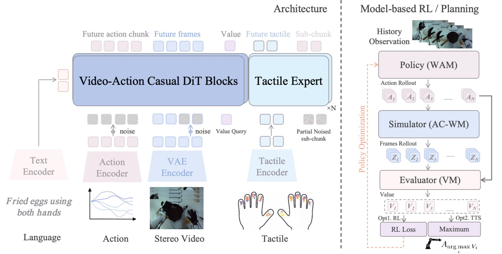
作者把任务写成部分可观测马尔可夫决策过程：观测 ot = (图像, 本体感受, 可选触觉)，因为手经常挡住物体和接触点，当前观测不够当马尔可夫状态，所以策略条件在历史上。实际中，核心模型用上下文 ct 表示历史：语言、当前本体感受，以及由工作记忆机制（见记忆一节）提供的编码后视觉历史。
给定上下文，设 At 为可执行的动作块，Zt 为它对应的未来观测 latent，Yt 为离散化的任务进度值。从机器人域中训练开始，三者的联合密度按“动作优先”的顺序分解：
这三个因子是同一个共享参数模型的三种调用方式，并不是三个分别训练的网络。给分支排序用的分数是评估器的条件期望 Vθ(ct, At, Zt) = 𝔼[Yt]（Eq. 3）。
从中训练开始，每个训练窗口排成“干净的历史观测 + 若干个动作优先的块”：x = (Zctx; B1; …; BM)，每块 Bj = (qj; Aj; Zj; Uj)，其中 qj 是可选的本体感受，Uj 是只读的价值查询 token。
下面这个示意把论文 Eq. 7 的三种训练模式和 Figure 2 的掩码放在一起。点上面的按钮切换模式，看哪些 token 是干净条件、哪些被加噪并计 loss，以及注意力怎么连。
训练目标把三件事写进一个式子。对干净目标 x ∈ {Zj, Aj} 和高斯噪声 ε，xσ = (1 − σ)x + σε，速度目标 v* = ε − x。共享主干同时预测视频速度、动作速度和一个价值的类别分布：
三个 loss 开关 (wz, wa, wv) 和两路独立的噪声水平 (σz, σa) 一起决定当前是哪种模式：
| 模式 | (σz, σa) | (wz, wa, wv) | 监督的条件分布 | 中训练样本占比 |
|---|---|---|---|---|
| policy | (>0, >0) | (1, 1, 0) | pθ(At, Zt | ct) | 其余 ≈ 0.85 |
| simulation | (>0, 0) | (1, 0, 0) | pθ(Zt | ct, At) | 0.10 |
| evaluation | (0, 0) | (0, 0, 1) | pθ(Yt | ct, At, Zt) | 0.05 |
占比来自附录 E.2：simulation 和 evaluation 模式各占训练样本的 0.10 和 0.05，其余为 policy。价值目标离散成 201 个 bin，loss 权重 0.05。
掩码保证了依赖方向正确，但它不能判断一条录下来的动作值不值得模仿。所以每条轨迹只路由到它能正确监督的因子：
训练好以后，普通控制只查询动作因子 πθ(At | ct)，未来视频和价值只在规划或策略优化时才生成。因为动作 token 看不到本块的未来视频，这样做不会改变动作的分布。论文强调这保留了视频-动作联合训练的好处，又不必在每个控制步都做一次未来预测（引用 Fast-WAM、GigaWorld-Policy）。默认部署时，动作块用 5 步 flow-matching 去噪采样（附录 E.3）。
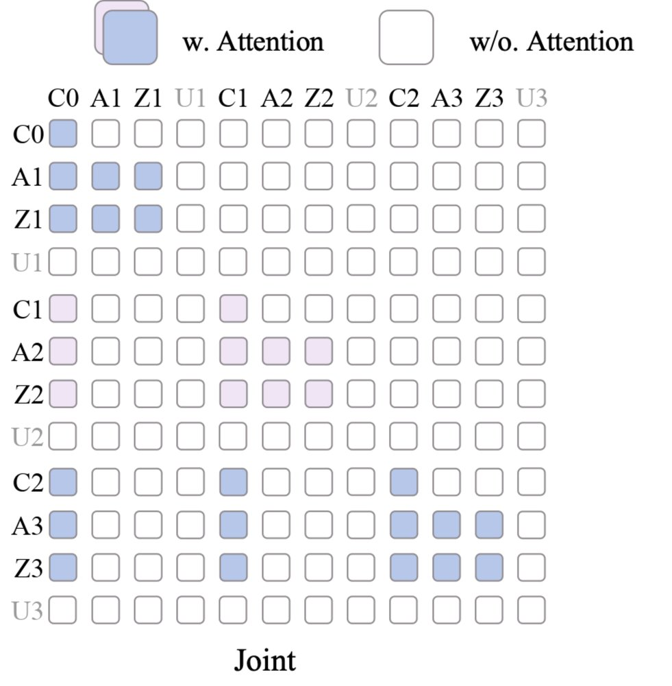
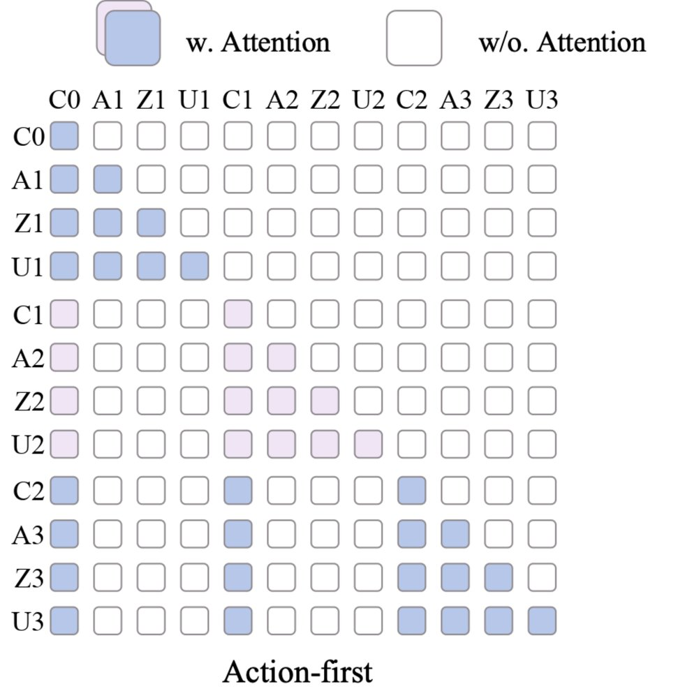
训练分四段。前两段只用人类第一视角数据，后两段才进入机器人域。动作优先掩码和监督路由也是从机器人域适配开始才启用的。
优化器设置（附录 E）：Stage 2 与中训练都用 AdamW，学习率 2×10−5，weight decay 0.01，梯度裁剪 0.5，bfloat16；Stage 2 常数学习率、1K 步 warm-up，中训练线性调度、200 步 warm-up。
表 1 列的是过滤、切分和标注之前的原始录制时长（约数）。条形长度按线性比例画。
| 数据集 | 相机 | 原始时长（小时） | 分辨率 (W×H) | 来源 |
|---|
条形颜色：浅灰＝单目，深灰＝双目。来源：论文 Table 1。
解读按表中数字，单目合计 112,500 小时，其中 Egocentric-100K 一个源就占 100,500 小时（约占总量 77%，分辨率只有 480×360）；双目合计 17,400 小时。也就是说，“13 万小时”的大头是低分辨率单目视频，只进入 Stage 1 的视频通路；带手部动作、真正参与视频-动作联合训练的双目数据是一万多小时量级。
论文还说明：同一个源可以进入多个阶段，例如 LightWheel 的单目录像进 Stage 1，双目录像进 Stage 2。此外，团队用 Wuji Human Gloves 采了几十小时人机对齐数据，作为中训练的补充。
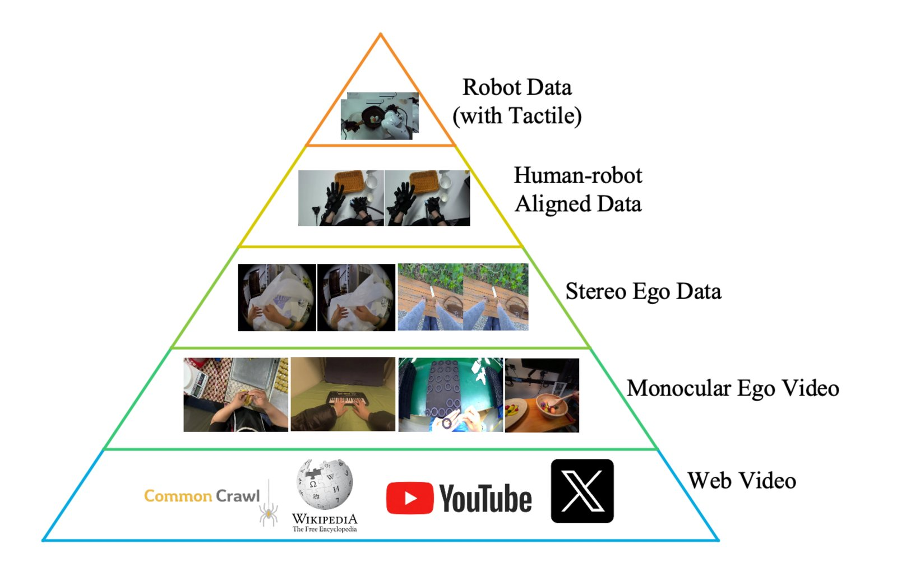
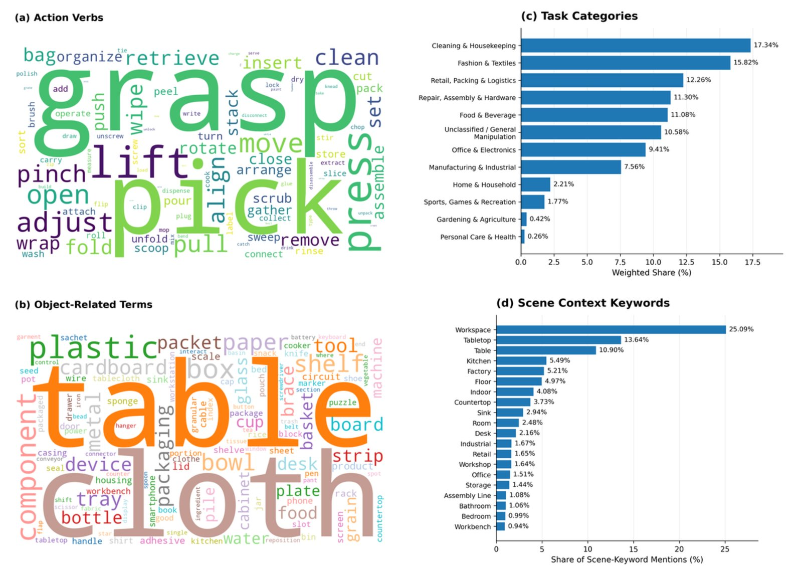
附录 A 列出三套双臂配置：天机 Marvin 双臂 + 两只 20 自由度 Wuji 手（另装 ZED Mini、ZED 2 相机和 Wuji Robot Glove 触觉）；天机 Gento Luna 双臂 + 20 自由度 Wuji Hand 2；Gento Luna + 22 自由度 Sharpa Wave。摘要称之为“完全仿生”的平台：双目视觉、双臂、双灵巧手和触觉。遥操作上，Marvin–Wuji 用 MANUS 手套（先转 21 点 MediaPipe 表示再重定向）加三个 VIVE Ultimate Tracker（躯干和双腕）；两套 Gento Luna 用 PICO 手柄位姿给双臂目标，手套数据分别重定向到 Wuji 或 Sharpa 手。人机对齐数据不驱动机器人：操作者戴一双 Wuji Human Gloves，双腕各一个 HTC VIVE Tracker，桌上固定第三个 Tracker 作参考系，头戴 ZED 2 录左右目 RGB。
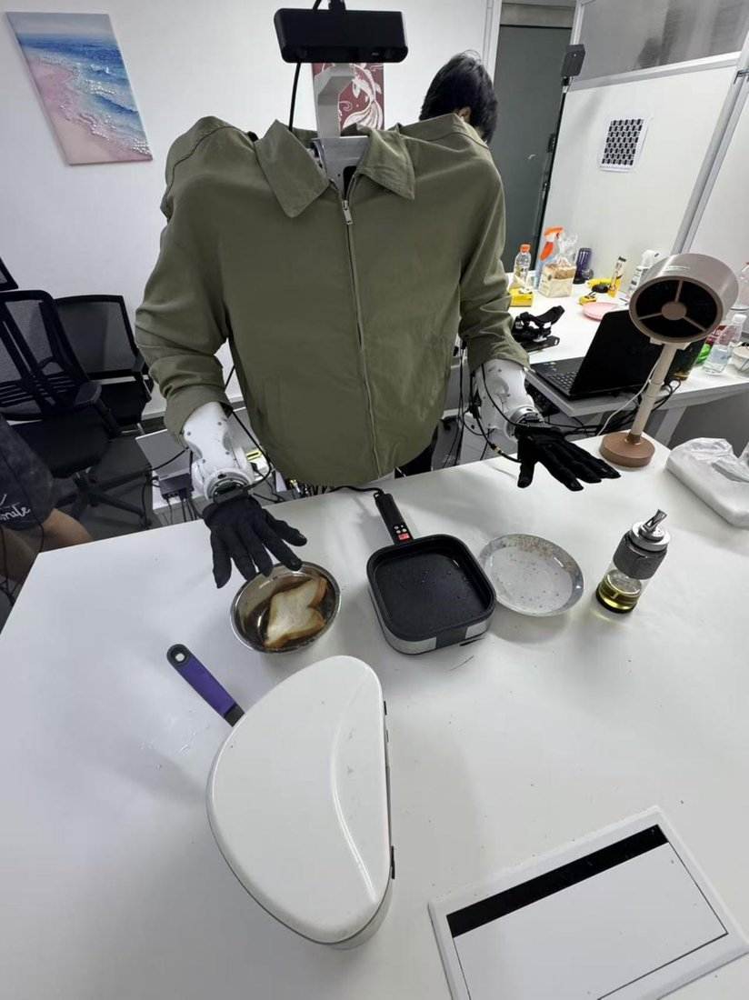
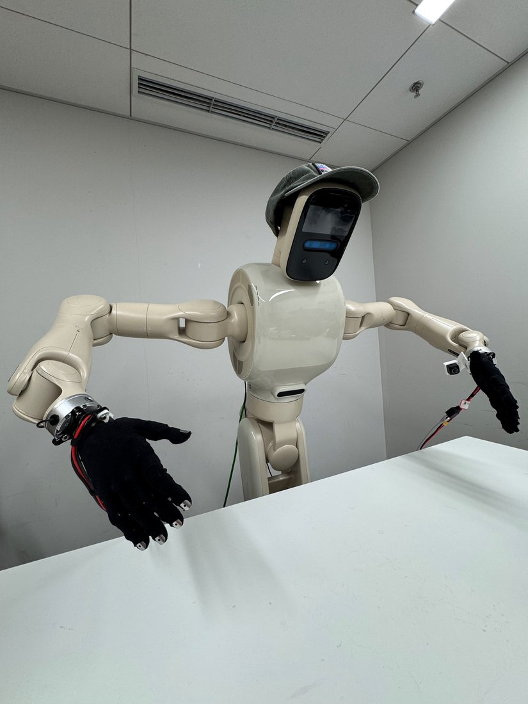
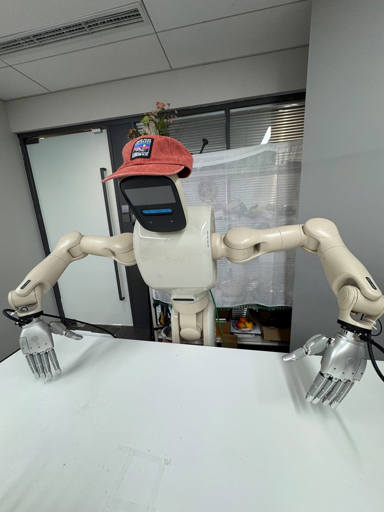
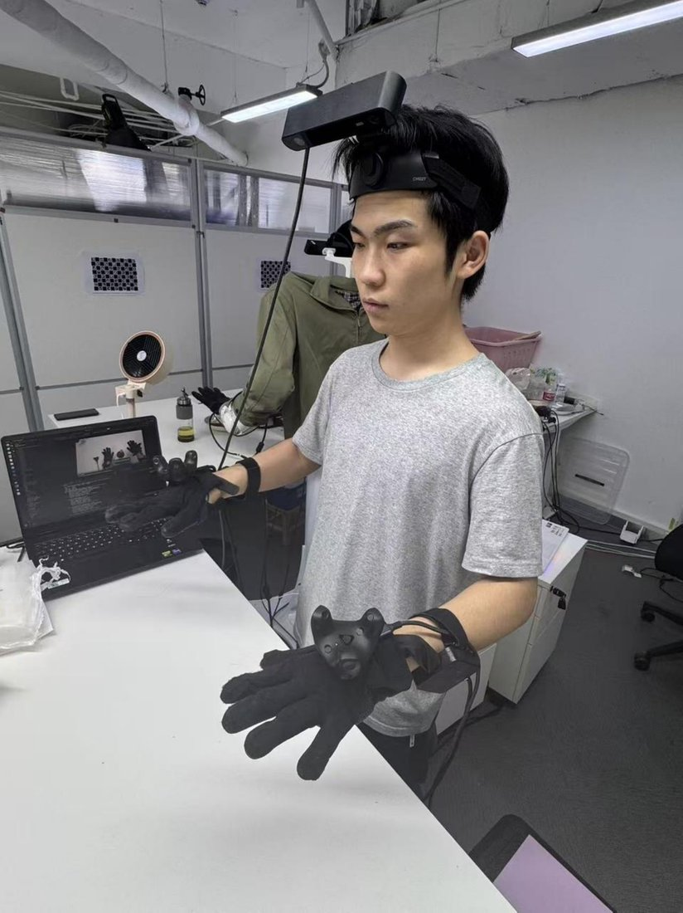
动作优先的分解让“提候选 → 想后果 → 打分”可以按顺序执行。要让模型自我改进，还需要把评估器的反馈送回策略。
沿用 VLAC 的相对进度定义。对成功轨迹中从时刻 t 开始、长度为 Δt 的片段，目标是
其中 T 是轨迹总长。正目标落在 [0, 1]，衡量这一段相对“剩余任务长度”推进了多少。只有正样本，评估器学不会怎样给偏离任务的行为打分，所以用两类负样本补上：失败的遥操作轨迹（抓不准、意外接触、偏离指令流程）和与任务无关的交互。正负值再离散成 Eq. 6 里的类别目标 Yt。
MBRL 的核心是把分数变成 [0, 1] 的“最优性权重”，再用它在两个隐式速度场之间插值：
mean 和 std 只在策略生成的候选上算（总体标准差），ε 防止方差接近零时数值不稳。每组候选另外放入一条真值“动作-未来”对，固定 r̂ = 1 作为正锚点，不参与均值方差计算。vref 来自 EMA 参考策略，更新时固定。直观地说：高分候选让在线策略的速度场朝它靠拢，低分候选让策略朝反方向走，r̂ ≈ 0.5 的候选两边抵消，策略留在参考附近。1/β 相当于强化引导的强度。预测出的未来 Zi 只通过分数 Vi 影响更新，不会作为输入暴露给动作速度预测器。
下面用示意数值走一遍两种用法。候选分数是随机生成的，不是论文数据。
候选生成、价值打分、参考目标构造和策略优化四个阶段吞吐不匹配，串行执行会让昂贵组件空转。作者参考 AcceRL 做了基于 Ray 的宏观异步流水线，各阶段用有界 FIFO 缓冲解耦。附录 E.3 给出的设置：
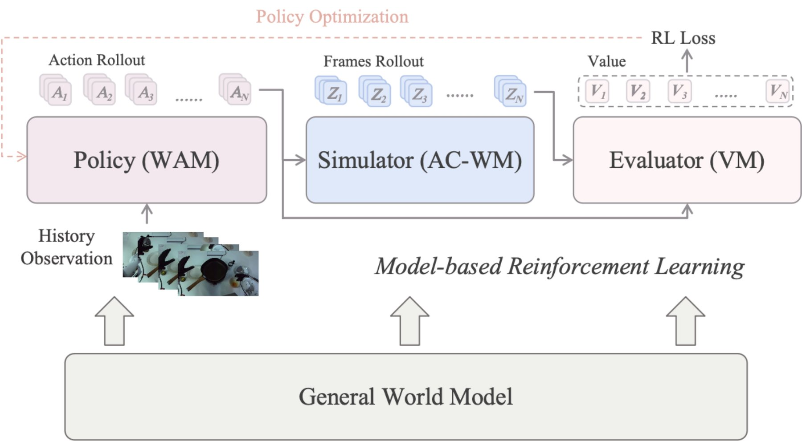
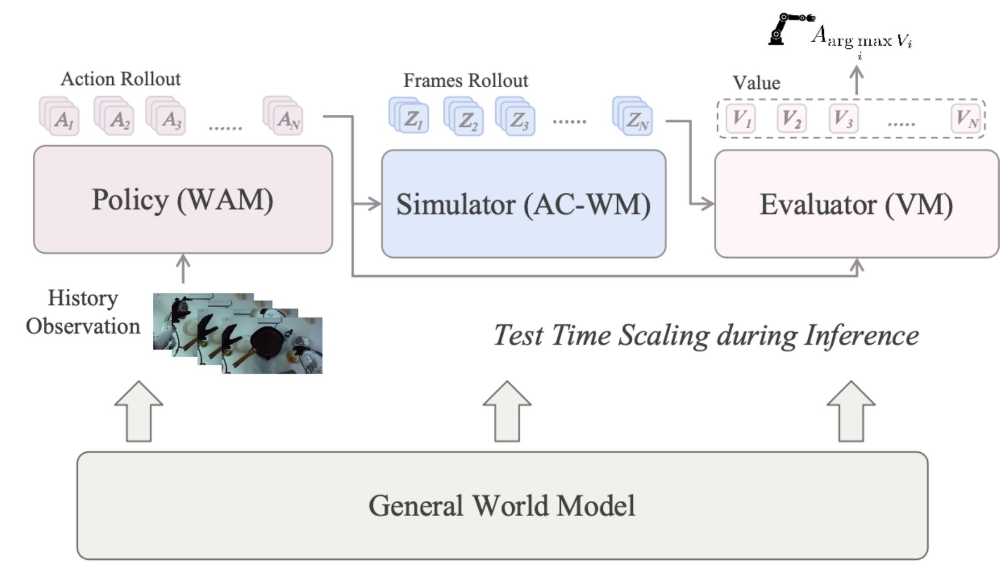
闭环只能用 ct 里保留下来的证据。有界上下文会丢掉任务早期看到、后面又需要的信息，手也可能在后面的画面里挡住物体。作者把“可访问的历史”当成一个显式的设计维度，做了三种方案：
两种长历史变体都在完整 episode 上训练，长度差异大，所以作者把多条 episode 打包进一次注意力调用，用块对角因果掩码隔开，各自生成 RoPE，padding 不计 loss。这只改变计算布局，与分开处理等价。拖动下面的滑块，看随着任务推进，三种方案各自还能“看见”哪些帧。
示意说明：滑动窗口按“最近 2 块 × κ = 2 = 4 个 latent 帧”画；混合记忆按“前 2 帧锚点 + 最近 4 帧 + 中间每帧 8 个记忆 token”画。token 计数只算视觉历史。
工作记忆扩展了视觉历史，但接触状态单靠视觉仍然可能模糊。作者想把高频的触觉证据接进来，又不想每来一段触觉就把整个主干重跑一遍。办法是挂一个轻量专家，复用主干算好的中间结果。
也就是说，专家读入第 k 个子块的中间动作、它之前的触觉窗口 τpret,k 和缓存，预测最终动作速度，一步走完剩下的 σc。
修正动作只用到了“之前”的触觉。为了让专家也学会接触在这个动作下会怎样演化，作者在每个子块之后预测真实的力窗口 fpostt,k：前一个窗口保持干净作条件，后一个窗口在归一化的力信号空间里加噪，用同样的 flow matching 目标去噪（Eq. 16）。
| 手 | 输入给专家的信号 | 是否被预测 | 用于哪个任务 |
|---|---|---|---|
| Sharpa Wave 22 自由度 | 60 维双手力/力矩向量；外加 10 个指腹的形变图像，时间卷积编码器把连续 6 帧形变图压成 20 个条件 token | 力：预测（仅训练） 形变图：只作条件，不预测 | Pull Out Paper Cup |
| Wuji Hand 2 20 自由度 | 1086 维双手向量：每只手 176 个三轴传感点共 1056 个逐点力值，加 30 个逐指三轴合力值 | 力：预测（仅训练） | Tear Paper |
两种手共用同一套专家结构和时间调度。力信号采样 90 Hz，Sharpa Wave 每个窗口额外提供 6 帧形变图；力输入按训练数据统计量归一化，无效通道置零。
成功率，每格 20 次试验。两个变体从同一个中训练权重出发，用同样的目标任务后训练数据。Table 5。
| Variant | Pull Out Paper Cup | Tear Paper | Avg. SR |
|---|---|---|---|
| w/o Tactile | 65% | 55% | 60.0% |
| w/ Tactile | 75% | 70% | 72.5% |
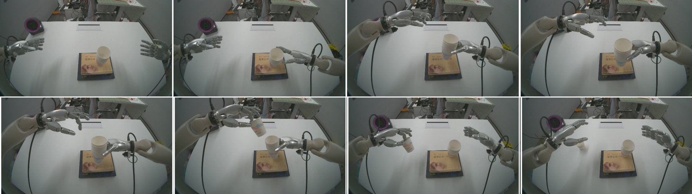
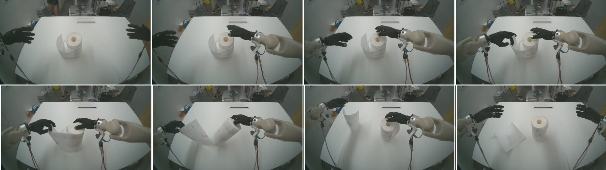
解读这里的触觉设计本质上是“双速率”：主干以块为单位（1.6 秒）做一次重计算，专家以 0.2 秒为单位用新的力信号做一次轻量修正，从而在不重跑 5B 主干的前提下拿到更高的反应频率。代价是触觉只作用在动作生成的最后一段：主干、模拟器和评估器都看不到触觉，规划和 MBRL 也就没法对接触后果做推理。这一点在四篇对照里与 ME-Dex 1.0 对比会更清楚。
| 用途 | 任务 | 考察什么 | 每任务试验数 |
|---|---|---|---|
| 主任务集（表 2） | Place Ball、Put Phone | 空间定位与放置 | 20（真机） |
| Attach Eraser、Screw Bulb | 精确对齐与持续接触 | 20（真机） | |
| Multi-Finger | 多指协调抓取不同形状物体 | 20（真机） | |
| MBRL 与规划（表 3） | Put Phone、Multi-Finger（复用主任务） | 隔离策略优化和测试时规划的效果 | 20（真机） |
| 工作记忆（表 4） | Find Square、Press Button | 关键证据可能被遮挡或早于短窗口 | 25（仿真）/ 20（真机） |
| 触觉（表 5） | Pull Out Paper Cup、Tear Paper | 接触敏感的抓握调整与双手持续交互 | 20（真机） |
评测协议：同一组对比内所有方法用相同的初始配置；真机每任务 20 个配置，长时程上下文研究的仿真分支每任务 25 个；每个配置跑一次闭环。只有所有任务谓词都在时限内满足才算成功，部分完成算失败。平均值是任务间的宏平均。仿真和真机结果分开报告。
受控对比：与 π0.5 比时，目标任务 SFT 数据、观测接口和评测协议都一致。WAN-SFT、Pretrain-SFT 和 Motus2 (Midtrain-SFT) 用同一套 SFT 流程，只有初始化不同：分别是 Wan 视频模型、两阶段第一视角预训练权重、机器人域中训练权重。
解读真机每格 20 次，一次成功就是 5 个百分点；两任务平均的 2.5 个百分点等于其中一个任务多成功一次。读后面的小差距时请记住这个粒度。论文没有报告置信区间或多随机种子。
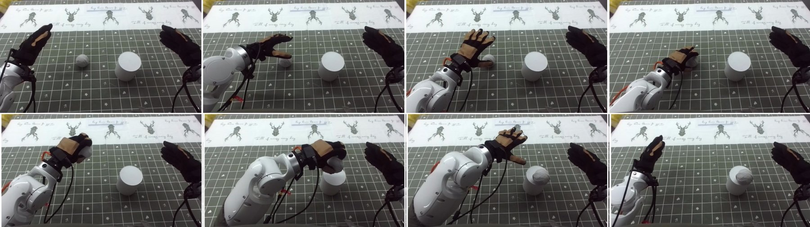
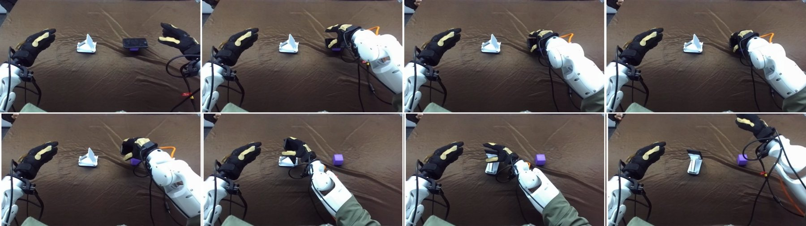
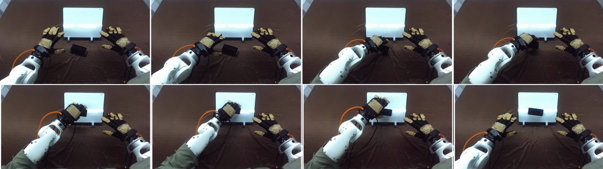
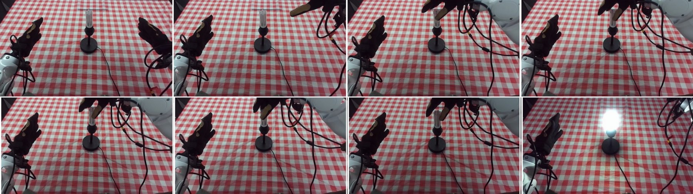
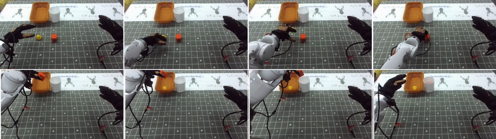
π0.5 和 WAN-SFT 在五个任务上全部是 0%，下图只画 Pretrain-SFT 和 Motus2，两者的差别只在是否做了机器人域中训练。
成功率，每格 20 次。π0.5 与 WAN-SFT 各任务均为 0%，未画出。Table 2。
| Method | Place Ball | Multi-Finger | Attach Eraser | Screw Bulb | Put Phone | Avg. SR |
|---|---|---|---|---|---|---|
| π0.5 | 0% | 0% | 0% | 0% | 0% | 0% |
| WAN-SFT | 0% | 0% | 0% | 0% | 0% | 0% |
| Pretrain-SFT | 60% | 35% | 90% | 55% | 15% | 51% |
| Motus2 (Midtrain-SFT) | 100% | 70% | 100% | 90% | 60% | 84% |
论文的结论：第一视角预训练把宏平均从 WAN-SFT 的 0% 提到 51%，机器人域中训练再提到 84%，比 Pretrain-SFT 高 33 个百分点。在同样的目标任务 SFT 协议下，这支持了第一视角预训练和中训练各自的贡献。
解读提升最大的是 Put Phone（15% → 60%，+45）和 Place Ball（60% → 100%，+40）；Attach Eraser 在 Pretrain-SFT 时已经是 90%。π0.5 在所有任务上都是 0%，这一点需要谨慎看待，放在疑点里讨论。
用嵌套的 2k、4k、10k、20k 小时双目子集（保持来源和分辨率比例）分别预训练，在同一个轨迹不相交的双目留出集上测人手动作预测误差：每个样本生成多个动作块，取均值与归一化后的真值腕部和手部动作比 MSE。每个数据量取所有 epoch 里最好的验证误差，拟合得到
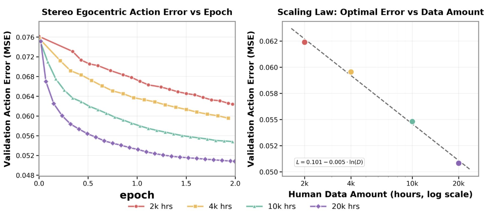
从同一个目标机器人权重出发，分别打开 DiffusionNFT 策略优化和 Best-of-N 规划。MBRL 改权重，规划只改推理。
格子颜色越深表示平均成功率越高。每个任务 20 次。Table 3。
论文的解读：规划带来 +2.5（65.0 → 67.5），MBRL 带来 +7.5（65.0 → 72.5），两者叠加到 75.0。MBRL 之后规划仍然有 +2.5，开着规划时 MBRL 仍然有 +7.5，说明两者在所评测的任务上互补。
解读换算成次数：规划的 +2.5 是 Put Phone 多成功 1 次（Multi-Finger 不变）；MBRL 的 +7.5 是 Put Phone 多 1 次、Multi-Finger 多 2 次。方向一致，但样本量很小。
附录 F 在四个任务上各画了一条成功、一条失败轨迹的预测进度。读数用 Eq. 7 的评估模式：每块的预测只条件在上下文、已执行的动作和这一块实际观测到的视频上，从不条件在最终结果上；按 latent 帧逐点读出，值域 [−1, 1]，训练目的是给 rollout 排序，不是校准过的成功概率。
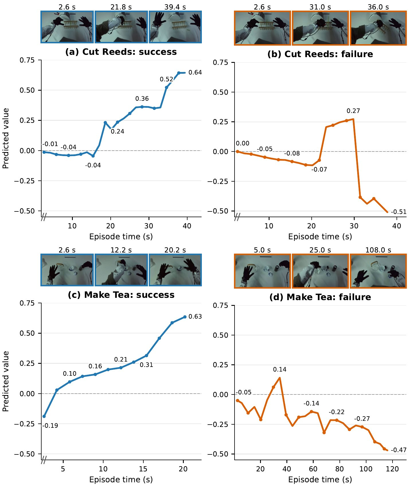
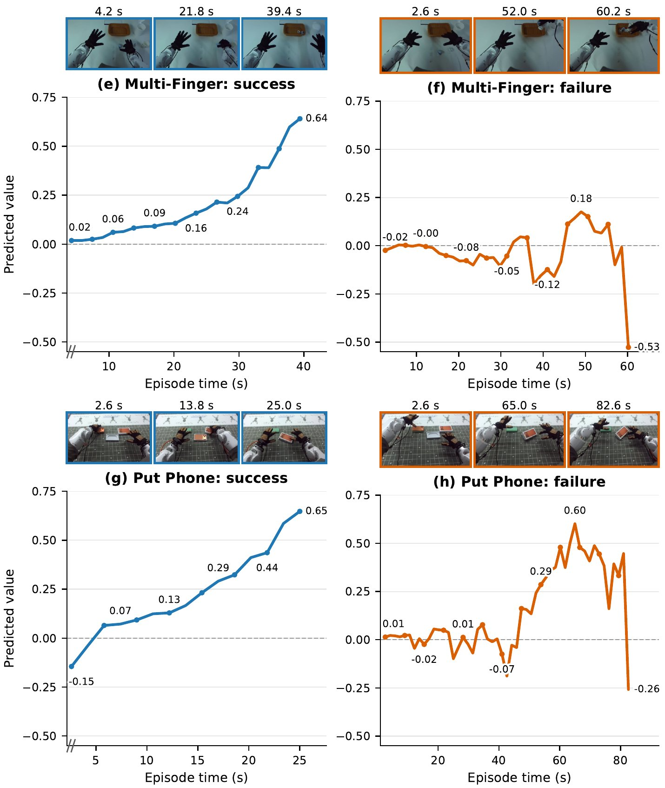
注意正文 §5.4 说附录 F 展示的是“Screw Bulb 的一条成功和三条失败轨迹，成功轨迹从 0.34 升到约 0.81”，但附录 F 实际是上面四个任务各一成一败、成功终点 0.63–0.65 的图；其中 Cut Reeds 和 Make Tea 不在 Figure 8 列出的 9 个评测任务里。LaTeX 源码里正文和附录就是这样写的，应是版本更新时没有同步。
在 Find Square 和 Press Button 两个记忆探针上，比较全局自回归和混合工作记忆，训练和配对评测设置一致，仿真与真机都测。
仿真每格 25 次，真机每格 20 次。两种变体都只训练了 10K 步（附录 E.3）。Table 4。
| Setting | Context mechanism | Find Square | Press Button | Avg. SR |
|---|---|---|---|---|
| Simulation | Hybrid memory | 64% | 40% | 52% |
| Global autoregression | 84% | 72% | 78% | |
| Real robot | Hybrid memory | 30% | 20% | 25.0% |
| Global autoregression | 65% | 50% | 57.5% |
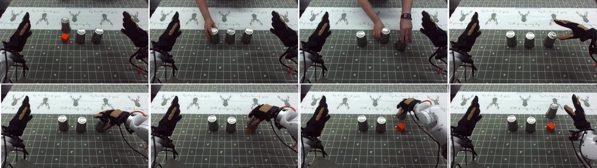
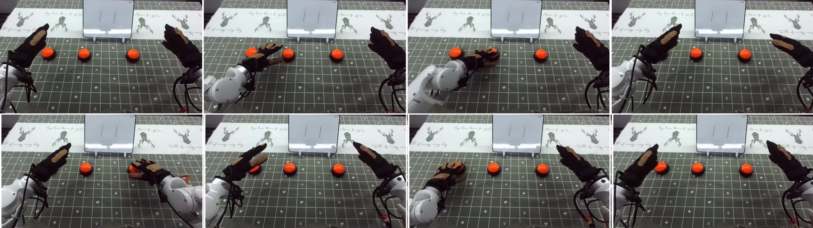
解读表 4 只比了两种长历史扩展，没有放默认的滑动窗口，所以从这张表看不出“长历史”本身比滑动窗口好多少。全局自回归的代价随 episode 长度线性增长，论文也没有报告它的推理延迟。
论文给的证据有三类。定性上，附录 F 的八条轨迹里，成功轨迹都升到 0.63–0.65，失败轨迹在进度丢失后下降。定量上是间接的：用这个分数做 Best-of-N 规划带来 +2.5，做 MBRL 带来 +7.5（表 3）。论文没有报告价值模型本身的排序准确率或与真实结果的相关性。
解读还有一个值得注意的细节：Put Phone 的失败轨迹 (h) 中途峰值 0.60，与成功轨迹的终点 0.65 很接近，它是在后面反复盖不上盖子时才掉下去的。而 MBRL 的想象时域只有 1 个块，打分看的是一小段后果，这种“看上去快成功了”的状态能否与真正会成功的状态区分开，论文没有直接回答。
按 §3.3 和附录 E.3，被更新的只有策略的动作相关参数；共享的视频主干（也就是模拟器的大部分能力）和评估器都冻结。所以进化的是“提议分布”：高分候选的方向被加强，低分候选的方向被削弱。模拟器和评估器本身在这个循环里不变。
论文的核心问题里就写了“不把未来观测暴露给动作预测”。如果动作依赖本块未来视频，部署时就必须先把视频生成出来才能出动作；而且作为 π(A|c) 这一因子的策略，本来就不应条件在尚未发生的观测上。作者的做法是预训练保留块内双向（学联合先验），到机器人域中训练时切成动作优先。
论文给的理由是：要接入高频触觉证据，又不想为每段触觉重跑整个主干。于是主干每块只到 σc = 0.2，剩下的一步交给读缓存的专家。
解读另一个现实原因写在局限里：可穿戴触觉数据很难跨本体扩展，人类第一视角数据基本不带触觉。把触觉限制在后训练的旁路里，主干就能继续吃 13 万小时的无触觉数据。
预训练阶段，人手 21 个 MediaPipe 关键点通过 IK 重定向到第一代 Wuji 手的 20 维关节空间；统一的 134 维表示记录双手腕部位姿和指关键点。中训练加入用 Wuji Human Gloves 采集的人机对齐数据，并用机器人轨迹做适配；后训练时 Wuji Hand 2 和 Sharpa Wave 用各自的原生关节角。表 2 中 Pretrain-SFT 与 Midtrain-SFT 相差 33 个百分点，说明这一步域适配很关键。
这四篇都在回答“力和触觉怎么进入机器人基础模型”。其中两篇走 VLA 路线，把力或触觉接进视觉-语言-动作模型；另两篇走世界模型路线，模型要预测未来。Motus2 的主要贡献其实在三接口的通用世界模型和第一视角数据扩展，触觉只占一节和一张表；但它给出了一种与 ME-Dex 1.0 很不一样的触觉接入方式。
| ForceVLA | Tactile-VLA | ME-Dex 1.0 | Motus2 | |
|---|---|---|---|---|
| 来源 | arXiv 2505.22159 · 复旦、上交 | arXiv 2507.09160 · 清华（高阳组） | arXiv 2609.21449 · 理想汽车基础模型团队 | arXiv 2608.30237 · 生数、清华（朱军组） |
| 路线 | VLA，基于 π0 | VLA | World Action Tactile Model：MoT 三专家（Video / Tactile / Action），全部 flow matching | 通用世界模型：视频-动作因果 DiT，一套权重三接口 |
| 力/触觉信号 | 6 轴力/力矩 | 触觉 | 多源异构触觉（不同本体、不同传感布局） | 灵巧手力信号：Wuji Hand 2 为 1086 维；Sharpa Wave 为 60 维力/力矩 + 指腹形变图 |
| 接入方式 | force-aware MoE（FVLMoE）在动作解码阶段融合 VL 嵌入与实时力反馈 | 深度融合进 VLA，配混合位置-力控制器和基于触觉反馈的推理模块 | Tactile Expert 与视频、动作专家在中间层共享注意力，联合去噪；Canonical Hand Model + Unified Tactile Autoencoder 统一空间与隐空间 | 旁路触觉专家读主干 detached KV，只负责每块去噪的最后一段（σ 0.2 → 0） |
| 触觉的角色 | 条件 | 条件 | 被预测的未来观测，与视频同等 | 前一窗口作条件修正动作；后一窗口的预测只是训练辅助，部署不用；主干不受触觉梯度 |
| 数据 | 自采 ForceVLA-Data：视觉、本体、力/力矩同步，5 个接触密集任务 | 少量示范激活 VLM 先验 | Agentic Tactile Data Engine 在 RoboTwin、DexJoCo 轨迹回放中补录力传感器数据 | 真机后训练数据；人类第一视角预训练数据不含触觉 |
| 主要证据 | 平均成功率比 π0 基线高 23.2%，插头插入等任务最高 80% | 零样本泛化到触觉相关的指令跟随、常识和推理 | RoboTwin、DexJoCo、ManiFeel 仿真 + 真机（夹爪与灵巧手） | 2 个任务 × 20 次：60.0% → 72.5% |
其余三篇的信息取自本批次的摘要级概述，细节以各自的精读页为准。
解读两篇都是世界模型路线，但对触觉的定位几乎相反。
换句话说，如果问“触觉是条件还是被预测的观测”：ME-Dex 1.0 明确选了后者；Motus2 两者都做了一点，但真正进入部署链路的只有条件这一面，它的“世界模型”部分仍然是视觉的。两篇放在一起读，正好对应了触觉进入世界模型的两种代价取舍：要表示层面的统一，就得解决数据；要数据可扩展，触觉就只能晚一点、浅一点地接入。